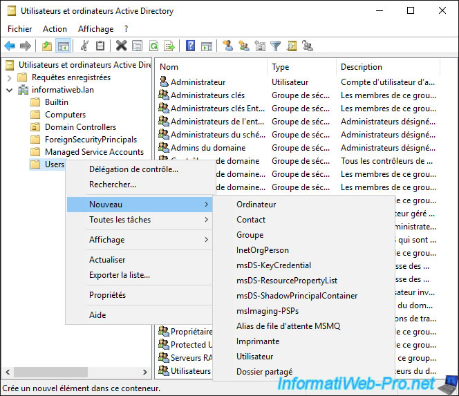
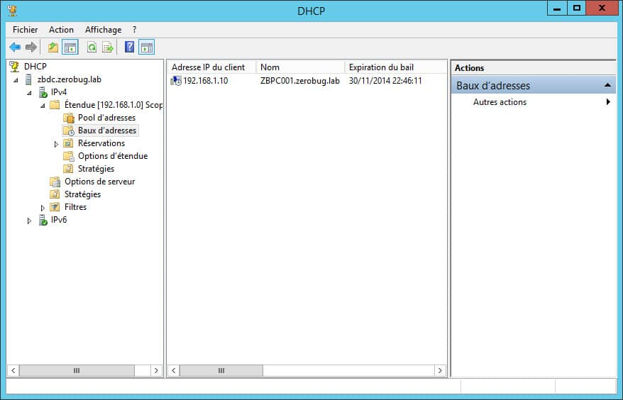
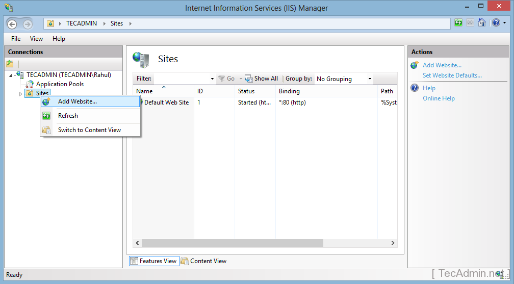

Durant mes études, j'ai installé des Windows Server pour découvrir les rôles et la gestion Active Directory
J'ai installé plusieurs version de ce système, qui sont :
J'ai d'abord commencé avec les rôles essentiels, à savoir Active Directory et DNS

Ensuite, j'ai installé un serveur DHCP

Enfin, j'ai fais un seveur Web sous IIS

Retour